11/11 · storytelling
Por dentro do display modular da Kelco: uma estrutura para supermercado, loja de bairro e empório
Separar estrutura de comunicação fez o mesmo display servir em formatos de loja diferentes e trocar de campanha sem fabricar peça nova.
Toque em Aprovar, Pedir ajuste ou Não publicar em cada peça. Abre o GitHub com tudo preenchido: é só tocar em Submit new issue. No ajuste, escreva o que mudar. A rotina lê sua resposta na rodada seguinte (10h35, 12h35, 14h35 e 16h35) e o selo da peça muda aqui.
11/11 · sai a partir de 12:30
Instagram · carrossel
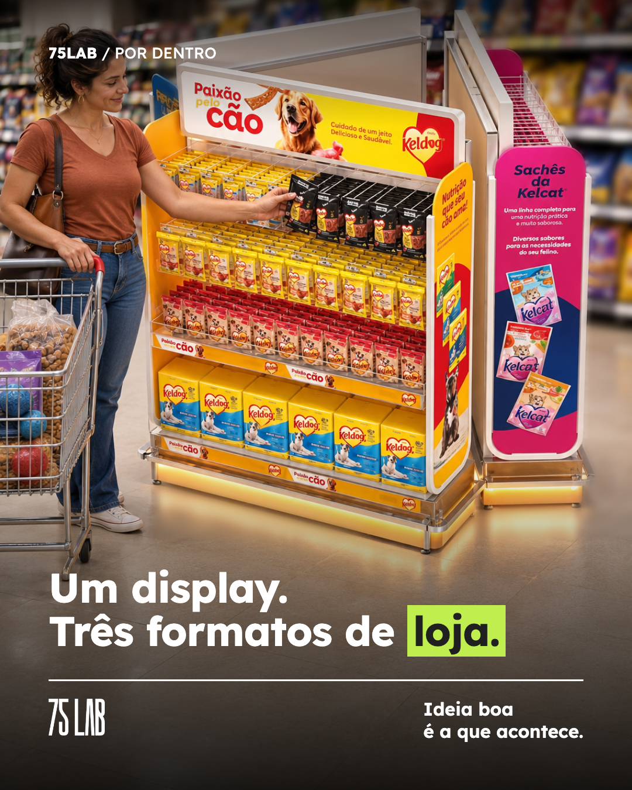
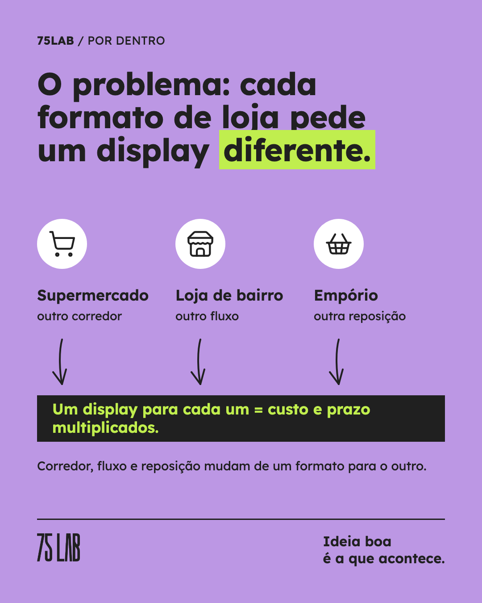
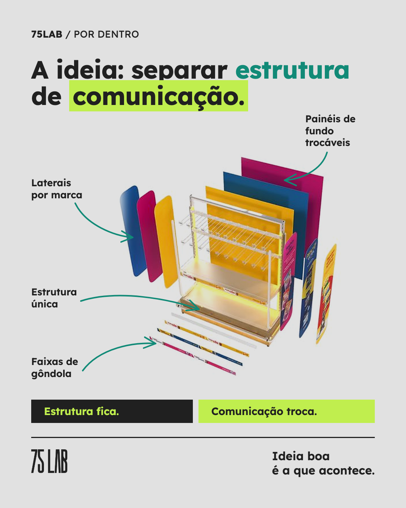
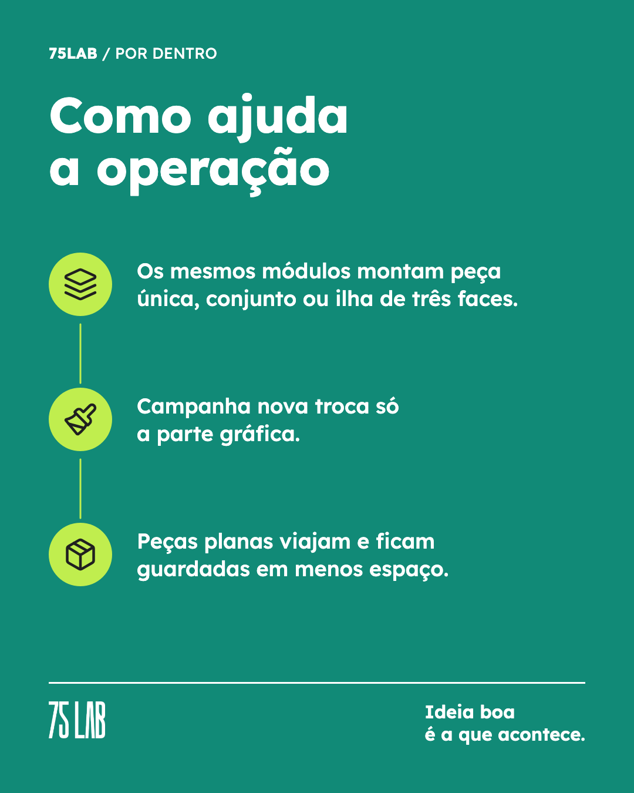
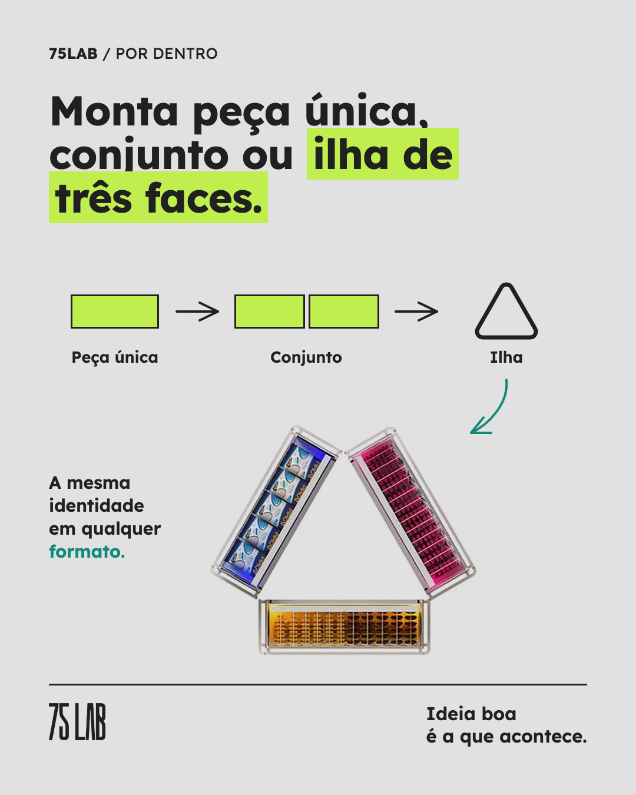
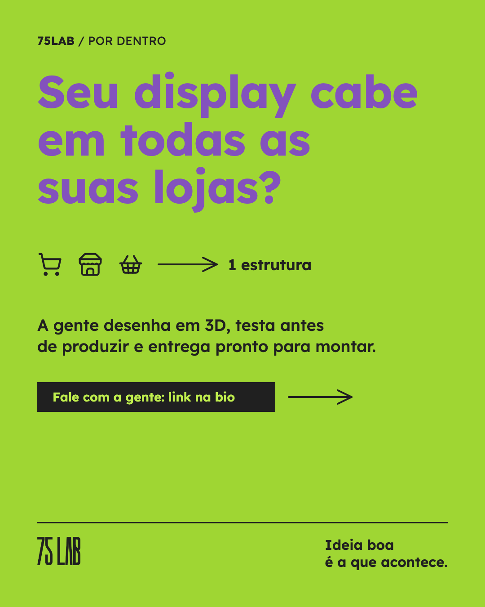
Legenda
Por dentro de um projeto: o display modular da Kelco. O problema era conhecido de quem cuida de trade: supermercado, loja de bairro e empório pedem peças diferentes. Corredor, fluxo e reposição mudam de um formato para o outro, e fazer um display para cada um multiplica custo e prazo. A saída foi separar estrutura de comunicação. A estrutura é uma só. Painéis, testeira e faixas mudam por marca: Keldog de um lado, Kelcat do outro. Na operação, isso quer dizer: 1. Os mesmos módulos montam peça única, conjunto ou ilha de três faces. 2. Campanha nova troca só a parte gráfica. 3. Peças planas viajam e ficam guardadas ocupando menos espaço. E na gôndola, a marca chega a mais lojas com a mesma cara. Arrasta para ver a história inteira e salva para a próxima concorrência de PDV. Mais projetos em 75lab.com.br/cases.html #trademarketing #pdv #merchandising #displaydepdv #varejo
Carrossel no ar
11/11 · sai a partir de 10:30
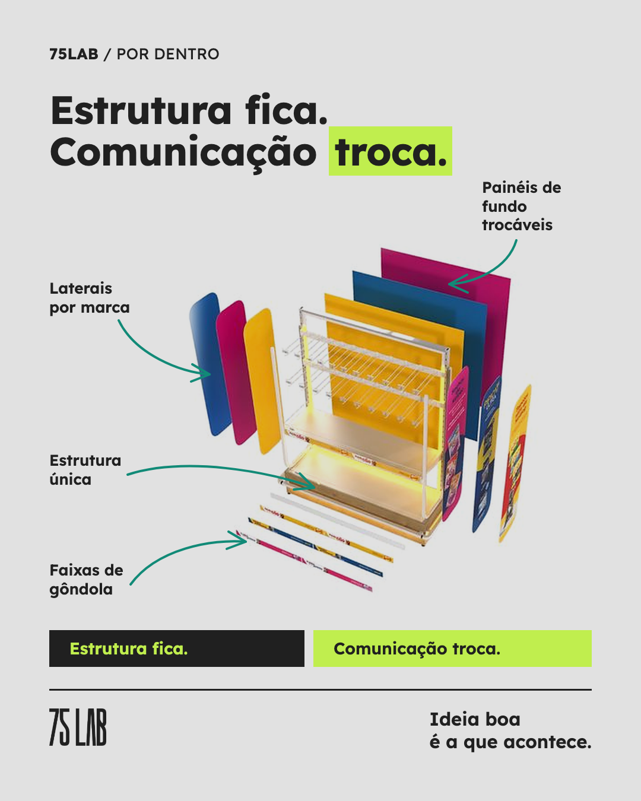
Texto da página da 75 LAB
Por dentro de um projeto: o display modular da Kelco. O ponto de partida é conhecido de quem cuida de trade. Supermercado, loja de bairro e empório pedem peças diferentes, e fazer um display para cada formato multiplica custo, prazo e estoque de peça. A resposta foi separar estrutura de comunicação. A estrutura é uma só. Painéis, testeira e faixas mudam por marca: Keldog de um lado, Kelcat do outro. O que isso muda na operação: 1. Os mesmos módulos montam peça única, conjunto lado a lado ou ilha de três faces. 2. Campanha nova troca só a parte gráfica, sem fabricar outra estrutura. 3. Peças planas viajam e ficam guardadas ocupando menos espaço. E o que muda na competição: a marca chega a mais lojas com a mesma identidade, e o shopper reconhece o ponto dela em qualquer formato. Tudo começa no 3D, antes de cortar a primeira chapa. Mais projetos em https://75lab.com.br/cases.html #trademarketing #pdv #varejo
Texto do seu perfil
Uma pergunta que faço em toda reunião de display: em quantos formatos de loja essa peça precisa funcionar? Supermercado, loja de bairro e empório são três realidades de corredor, fluxo e reposição. No modular que fizemos para a Kelco, em vez de um projeto para cada uma, separamos estrutura de comunicação. A estrutura é uma só e os painéis mudam por marca: Keldog de um lado, Kelcat do outro. Campanha nova pede só gráfica nova. Na operação, os mesmos módulos viram peça única, conjunto ou ilha de três faces. As peças são planas, então viajam e ficam guardadas em menos espaço. Na gôndola, a marca ganha o que mais importa: aparecer igual em todo lugar onde o shopper compra. Se você está desenhando o PDV de 2027, vale levar essa pergunta para a próxima reunião. O case está em https://75lab.com.br/cases.html #trademarketing #pdv #varejo
Página e perfil
11/11 · sai a partir de 14:30
Reels
Legenda
Um display, três formatos de loja: supermercado, loja de bairro e empório. Por dentro do display modular da Kelco. Case completo em 75lab.com.br/cases.html #trademarketing #pdv #displaydepdv #varejo
Roteiro
3.0 s · 3.4 s · 3.4 s · 4.0 s · 3.4 s · 3.6 s · Seu display cabe em todas as suas lojas? Projetos reais em 75lab.com.br/cases
Reels no ar
11/11 · sai a partir de 12:30
Stories
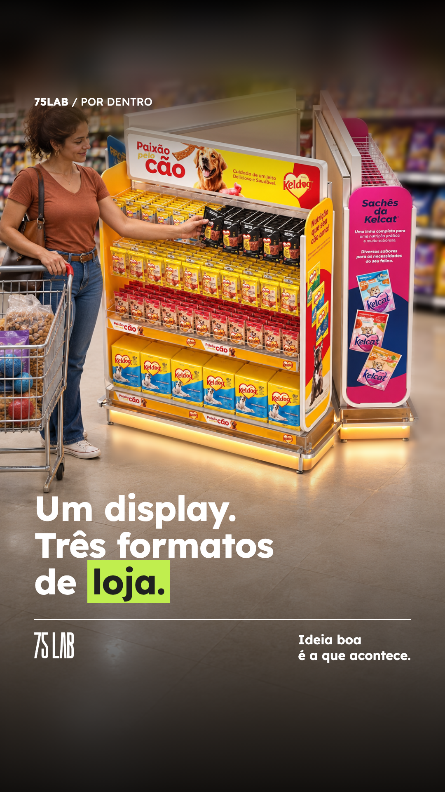
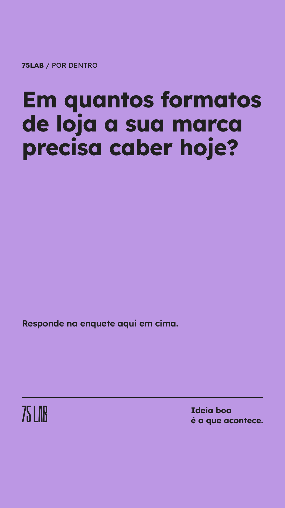
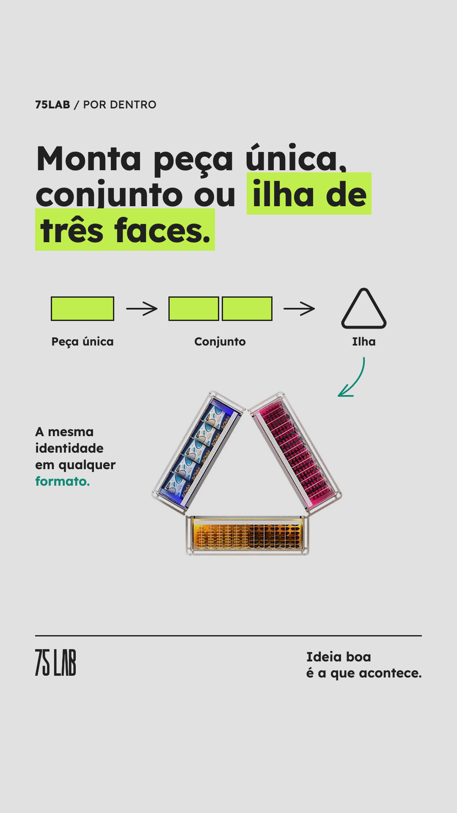
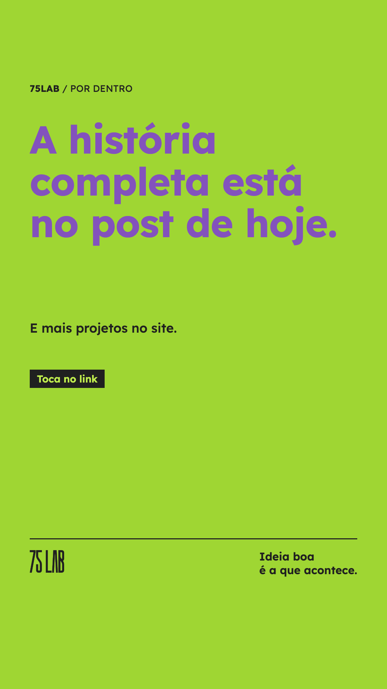
Indicação
Tela 1: sem sticker Tela 2: Enquete no meio da tela: "1 ou 2" e "3 ou mais" Tela 3: sem sticker Tela 4: Link: https://75lab.com.br/cases.html
No seu e-mail para postar pelo app
11/11 · sai a partir de 10:30
E-mail marketing
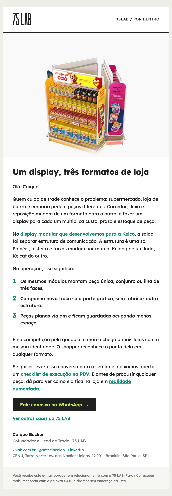
Assunto
Por dentro de um display que cabe em três formatos de loja
Linha de apoio
Supermercado, loja de bairro e empório com a mesma estrutura: a história do modular da Kelco.
Enviado para a lista de teste
Fontes